library(survival)Análisis de Datos de Tiempos de Fallo

Introducción
En esta página se presentan las principales herramientas computacionales para llevar a cabo un análisis de tiempos de vida utilizando el lenguaje de programación R, en particular mediante el paquete survival. Estas funciones son fundamentales para el estudio de datos censurados y/o truncados, como suele encontrarse en bioestadística, análisis de fiabilidad, y otras áreas donde interesa modelar el tiempo hasta un evento (por ejemplo, muerte, recaída o falla mecánica).
Aquí nos enfocamos en herramientas prácticas para aplicar modelos de supervivencia en datos reales con R. Para un tratamiento teórico más profundo, se recomienda consultar los textos clásicos de Klein & Moeschberger (2003), así como Therneau & Grambsch (2000).
Para comenzar, es necesario cargar la biblioteca survival, que contiene las funciones centrales para el análisis de supervivencia en R. Una exposición clara y aplicada puede encontrarse en Moore (2016).
El paquete incluye varios conjuntos de datos precargados que pueden utilizarse para ilustrar métodos de análisis de supervivencia, entre ellos:
data(package = "survival")Conjuntos de datos del paquete survival
A continuación se listan algunos de los datasets incluidos en el paquete survival, ampliamente utilizados para ilustrar técnicas de análisis de supervivencia:
| Nombre del dataset | Descripción |
|---|---|
lung |
Supervivencia en pacientes con cáncer de pulmón |
ovarian |
Ensayo clínico de mantenimiento en pacientes con cáncer de ovario |
aml |
Datos de pacientes con leucemia mieloide aguda |
veteran |
Ensayo clínico en cáncer de pulmón con dos tratamientos |
jasa |
Supervivencia de pacientes en lista de espera para trasplante de corazón |
heart |
Datos de entrada/salida de pacientes en el programa de trasplante cardíaco |
pbc |
Estudio longitudinal sobre colangitis biliar primaria |
colon |
Datos de supervivencia en pacientes con cáncer de colon |
kidney |
Tiempo hasta el fallo de catéteres renales |
cancer |
Datos de distintos tipos de cáncer (datos ilustrativos) |
Puedes cargar cualquiera de estos conjuntos con data(nombre, package = "survival"), por ejemplo:
data(lung, package = "survival")1. La función Surv
Esta función permite crear objetos de tipo supervivencia. Es la base para trabajar con modelos de supervivencia en R.
Surv(time, time2, event, type = c('right', 'left', 'interval', 'counting', 'interval2'), origin = 0)is.Surv(x)time: Representa el tiempo de inicio de la observación. Para datos de intervalo, el primer argumento es el extremo inicial del intervalo.time2: Representa el indicador de estado, normalmente 0 = vivo (censurado), 1 = muerto (no censurado). Otras opciones son VERDADERO/FALSO (VERDADERO = la muerte) o 1/2 (2 = muerto). Para datos con censura de intervalo, el indicador de estado es 0 = censura a la derecha, 1 = suceso ocurrido entime, 2 = censura a la izquierda, 3 = censura de intervalo. Este indicador puede ser omitido en el caso de que se asuma que todos los sujetos tienen el mismo estado.event: Representa el tiempo de finalización de la observación para un intervalo censurado o proceso de conteo. Se asume que los intervalos están abiertos a la izquierda y cerrados a la derecha, (el principio, el final]. Para un proceso de recuento de datoseventindica si un acontecimiento ocurrió al final del intervalo.origin: Es una utilidad que permite trabajar bajo el enfoque de los procesos de recuento. Esta opción es usada en un modelo que contiene estratos dependientes del tiempo, para enumerar los sujetos correctamente que cambian de un estrato a otro. En raras ocasiones se suele emplear.x: Cualquier objeto de R.
Ejemplos
Cuando se observan longitudes de tiempo
Datos del ejemplo: lung
El conjunto de datos lung se refiere al estudio de supervivencia en pacientes con cáncer de pulmón, recopilado por el North Central Cancer Treatment Group.
Contiene 228 registros y 10 variables, que son:
inst: código de la institución médica
time: tiempo de supervivencia o censura (en días)
status: estado del paciente (1 = censurado, 2 = fallecido)
age: edad del paciente (en años)
sex: sexo del paciente (1 = hombre, 2 = mujer)
ph.ecog: puntaje ECOG (estado funcional del paciente)
ph.karno: puntaje Karnofsky según el médico
pat.karno: puntaje Karnofsky según el paciente
meal.cal: calorías ingeridas diariamente
wt.loss: pérdida de peso en los últimos seis meses (en libras)
Este conjunto permite analizar cómo variables clínicas y funcionales se asocian con el tiempo de supervivencia en pacientes con cáncer avanzado.
data(cancer, package="survival")
head(lung) inst time status age sex ph.ecog ph.karno pat.karno meal.cal wt.loss
1 3 306 2 74 1 1 90 100 1175 NA
2 3 455 2 68 1 0 90 90 1225 15
3 3 1010 1 56 1 0 90 90 NA 15
4 5 210 2 57 1 1 90 60 1150 11
5 1 883 2 60 1 0 100 90 NA 0
6 12 1022 1 74 1 1 50 80 513 0Surv(lung$time, lung$status) [1] 306 455 1010+ 210 883 1022+ 310 361 218 166 170 654
[13] 728 71 567 144 613 707 61 88 301 81 624 371
[25] 394 520 574 118 390 12 473 26 533 107 53 122
[37] 814 965+ 93 731 460 153 433 145 583 95 303 519
[49] 643 765 735 189 53 246 689 65 5 132 687 345
[61] 444 223 175 60 163 65 208 821+ 428 230 840+ 305
[73] 11 132 226 426 705 363 11 176 791 95 196+ 167
[85] 806+ 284 641 147 740+ 163 655 239 88 245 588+ 30
[97] 179 310 477 166 559+ 450 364 107 177 156 529+ 11
[109] 429 351 15 181 283 201 524 13 212 524 288 363
[121] 442 199 550 54 558 207 92 60 551+ 543+ 293 202
[133] 353 511+ 267 511+ 371 387 457 337 201 404+ 222 62
[145] 458+ 356+ 353 163 31 340 229 444+ 315+ 182 156 329
[157] 364+ 291 179 376+ 384+ 268 292+ 142 413+ 266+ 194 320
[169] 181 285 301+ 348 197 382+ 303+ 296+ 180 186 145 269+
[181] 300+ 284+ 350 272+ 292+ 332+ 285 259+ 110 286 270 81
[193] 131 225+ 269 225+ 243+ 279+ 276+ 135 79 59 240+ 202+
[205] 235+ 105 224+ 239 237+ 173+ 252+ 221+ 185+ 92+ 13 222+
[217] 192+ 183 211+ 175+ 197+ 203+ 116 188+ 191+ 105+ 174+ 177+Cuando se registran tiempos de entrada y salida
El segundo conjunto de datos usado como ejemplo en este caso es el conjunto “heart”, contiene información sobre supervivencia de 172 pacientes en la lista de espera del programa de transplantes de corazón del hospital de Standford. El registro se muestra como sigue en la siguiente figura.
head(heart) start stop event age year surgery transplant id
1 0 50 1 -17.155373 0.1232033 0 0 1
2 0 6 1 3.835729 0.2546201 0 0 2
3 0 1 0 6.297057 0.2655715 0 0 3
4 1 16 1 6.297057 0.2655715 0 1 3
5 0 36 0 -7.737166 0.4900753 0 0 4
6 36 39 1 -7.737166 0.4900753 0 1 4En este caso cada individuo se incorpora al estudio en el instante que indica la variable start, y abandona el estudio en el instante indicado por stop. Es decir los pacientes entran en el estudio de manera escalonada, esta es la forma habitual en que los individuos son incorporados en estudios de Supervivencia, a diferencia de en estudios de Fiabilidad, donde todos los sujetos entran en estudio a la vez. No sólo estamos interesados en la longitud del intervalo que determina el tiempo de vida si también de dónde está localizado. La variable event nos dice de cada individuo si está vivo o falleció al final del estudio. Además se incluye otro tipo de información como la edad del individuo (age), si se le ha realizado un transplante o no (transplant) y si ha recibido otro tipo de cirugía antes (surgery). Ahora el resultado de la función Surv es el objeto que se muestra, en parte, a continuación.
with(heart,Surv(start, stop, event)) [1] ( 0.0, 50.0] ( 0.0, 6.0] ( 0.0, 1.0+] ( 1.0, 16.0]
[5] ( 0.0, 36.0+] ( 36.0, 39.0] ( 0.0, 18.0] ( 0.0, 3.0]
[9] ( 0.0, 51.0+] ( 51.0, 675.0] ( 0.0, 40.0] ( 0.0, 85.0]
[13] ( 0.0, 12.0+] ( 12.0, 58.0] ( 0.0, 26.0+] ( 26.0, 153.0]
[17] ( 0.0, 8.0] ( 0.0, 17.0+] ( 17.0, 81.0] ( 0.0, 37.0+]
[21] ( 37.0,1387.0] ( 0.0, 1.0] ( 0.0, 28.0+] ( 28.0, 308.0]
[25] ( 0.0, 36.0] ( 0.0, 20.0+] ( 20.0, 43.0] ( 0.0, 37.0]
[29] ( 0.0, 18.0+] ( 18.0, 28.0] ( 0.0, 8.0+] ( 8.0,1032.0]
[33] ( 0.0, 12.0+] ( 12.0, 51.0] ( 0.0, 3.0+] ( 3.0, 733.0]
[37] ( 0.0, 83.0+] ( 83.0, 219.0] ( 0.0, 25.0+] ( 25.0,1800.0+]
[41] ( 0.0,1401.0+] ( 0.0, 263.0] ( 0.0, 71.0+] ( 71.0, 72.0]
[45] ( 0.0, 35.0] ( 0.0, 16.0+] ( 16.0, 852.0] ( 0.0, 16.0]
[49] ( 0.0, 17.0+] ( 17.0, 77.0] ( 0.0, 51.0+] ( 51.0,1587.0+]
[53] ( 0.0, 23.0+] ( 23.0,1572.0+] ( 0.0, 12.0] ( 0.0, 46.0+]
[57] ( 46.0, 100.0] ( 0.0, 19.0+] ( 19.0, 66.0] ( 0.0, 4.5+]
[61] ( 4.5, 5.0] ( 0.0, 2.0+] ( 2.0, 53.0] ( 0.0, 41.0+]
[65] ( 41.0,1408.0+] ( 0.0, 58.0+] ( 58.0,1322.0+] ( 0.0, 3.0]
[69] ( 0.0, 2.0] ( 0.0, 40.0] ( 0.0, 1.0+] ( 1.0, 45.0]
[73] ( 0.0, 2.0+] ( 2.0, 996.0] ( 0.0, 21.0+] ( 21.0, 72.0]
[77] ( 0.0, 9.0] ( 0.0, 36.0+] ( 36.0,1142.0+] ( 0.0, 83.0+]
[81] ( 83.0, 980.0] ( 0.0, 32.0+] ( 32.0, 285.0] ( 0.0, 102.0]
[85] ( 0.0, 41.0+] ( 41.0, 188.0] ( 0.0, 3.0] ( 0.0, 10.0+]
[89] ( 10.0, 61.0] ( 0.0, 67.0+] ( 67.0, 942.0+] ( 0.0, 149.0]
[93] ( 0.0, 21.0+] ( 21.0, 343.0] ( 0.0, 78.0+] ( 78.0, 916.0+]
[97] ( 0.0, 3.0+] ( 3.0, 68.0] ( 0.0, 2.0] ( 0.0, 69.0]
[101] ( 0.0, 27.0+] ( 27.0, 842.0+] ( 0.0, 33.0+] ( 33.0, 584.0]
[105] ( 0.0, 12.0+] ( 12.0, 78.0] ( 0.0, 32.0] ( 0.0, 57.0+]
[109] ( 57.0, 285.0] ( 0.0, 3.0+] ( 3.0, 68.0] ( 0.0, 10.0+]
[113] ( 10.0, 670.0+] ( 0.0, 5.0+] ( 5.0, 30.0] ( 0.0, 31.0+]
[117] ( 31.0, 620.0+] ( 0.0, 4.0+] ( 4.0, 596.0+] ( 0.0, 27.0+]
[121] ( 27.0, 90.0] ( 0.0, 5.0+] ( 5.0, 17.0] ( 0.0, 2.0]
[125] ( 0.0, 46.0+] ( 46.0, 545.0+] ( 0.0, 21.0] ( 0.0, 210.0+]
[129] (210.0, 515.0+] ( 0.0, 67.0+] ( 67.0, 96.0] ( 0.0, 26.0+]
[133] ( 26.0, 482.0+] ( 0.0, 6.0+] ( 6.0, 445.0+] ( 0.0, 428.0+]
[137] ( 0.0, 32.0+] ( 32.0, 80.0] ( 0.0, 37.0+] ( 37.0, 334.0]
[141] ( 0.0, 5.0] ( 0.0, 8.0+] ( 8.0, 397.0+] ( 0.0, 60.0+]
[145] ( 60.0, 110.0] ( 0.0, 31.0+] ( 31.0, 370.0+] ( 0.0, 139.0+]
[149] (139.0, 207.0] ( 0.0, 160.0+] (160.0, 186.0] ( 0.0, 340.0]
[153] ( 0.0, 310.0+] (310.0, 340.0+] ( 0.0, 28.0+] ( 28.0, 265.0+]
[157] ( 0.0, 4.0+] ( 4.0, 165.0] ( 0.0, 2.0+] ( 2.0, 16.0]
[161] ( 0.0, 13.0+] ( 13.0, 180.0+] ( 0.0, 21.0+] ( 21.0, 131.0+]
[165] ( 0.0, 96.0+] ( 96.0, 109.0+] ( 0.0, 21.0] ( 0.0, 38.0+]
[169] ( 38.0, 39.0+] ( 0.0, 31.0+] ( 0.0, 11.0+] ( 0.0, 6.0] Ejercicio
- Carga el dataset
ovariany construye el objetoSurv(futime, fustat). ¿Qué tipo de censura presentan los datos?
2. La función survfit
Permite calcular curvas de supervivencia no paramétricas (Kaplan-Meier o Fleming-Harrington) o estimar curvas ajustadas a modelos de Cox.
survfit(formula, data, type = "kaplan-meier")formula: Objeto que define la fórmula del modelo a ajustar.data: Conjunto de datos que se utiliza para interpretar las variables mencionadas en los argumentosformula,subsetyweights.weights: Pesos aplicados a cada caso u observación.subset: Expresión que indica un subconjunto de las filas del conjunto de datos que se utilizarán en la estimación. Puede ser:- un vector lógico (de longitud igual al número de observaciones),
- un vector numérico que indique los índices de observaciones a incluir (o excluir si son negativos),
- un vector de caracteres con los nombres de las filas. Por defecto, se incluyen todas las observaciones.
na.action: Función utilizada para tratar los valores perdidos (NA). Se aplica al marco del modelo después de aplicarsubset. Por defecto esoptions()$na.action. Un valor común esna.omit, que excluye las observaciones con datos faltantes.times: Vector de tiempos en los cuales se evalúa la curva de supervivencia. Por defecto, la curva se evalúa en cada valor distinto del vector de tiempos especificado enformula.type: Cadena de caracteres que especifica el tipo de curva de supervivencia a estimar. Los valores posibles son:"kaplan-meier"(por defecto),"fleming-harrington","fh2"(cuando se proporciona una fórmula).
error: Cadena de caracteres que indica el método para estimar el error estándar. Los valores permitidos son:"greenwood": utiliza la fórmula de Greenwood,"tsiatis": utiliza la fórmula de Tsiatis. Basta con especificar la primera letra del nombre.
conf.type: Tipo de intervalo de confianza. Las opciones son:"none": no se calculan intervalos de confianza,"plain": intervalo estándar de la formacurve ± k × se(curve),"log"(por defecto): intervalos basados enlog(survival),"log-log": intervalos basados enlog(-log(survival)).
start.time: Valor numérico que indica el instante de tiempo a partir del cual comenzar a calcular la supervivencia. La curva estimada será condicional a haber sobrevivido hasta ese punto.conf.int: Nivel de confianza para los intervalos calculados. Por defecto, se usa0.95para construir intervalos al 95%.se.fit: Valor lógico (TRUEoFALSE) que indica si deben calcularse los errores estándar de la estimación. Su valor por defecto esTRUE.
Resultados
n: Número total de sujetos incluidos en cada curva de supervivencia.time: Instantes temporales en los que la curva de supervivencia presenta un salto (es decir, ocurre un evento).n.risk: Número de sujetos en riesgo justo antes de cada tiempot.n.event: Número de eventos (sucesos observados) que ocurren en cada tiempot.n.enter: Solo para datos de procesos de recuento. Indica cuántos sujetos entran al conjunto de riesgo en el tiempot.n.censor: Solo para procesos de recuento. Representa el número de sujetos que salen del conjunto de riesgo sin haber experimentado el evento, en el tiempot.surv: Estimación de la función de supervivencia justo después del tiempot(es decir, ent+0).std.err: Error estándar asociado a la estimación de la función de supervivencia o del riesgo acumulado, según el tipo de salida.upper: Límite superior del intervalo de confianza para la función de supervivencia.lower: Límite inferior del intervalo de confianza para la función de supervivencia.strata: Si se estiman múltiples curvas (por ejemplo, por grupos), esta componente indica el número de elementos detime,surv, etc. que corresponden a cada una. Los nombres asociados sirven como etiquetas de las curvas.
Ejemplo
Datos del ejemplo: aml
El conjunto de datos utilizado en este ejemplo, llamado aml, se refiere al análisis de supervivencia en pacientes con leucemia mieloide aguda.
time: tiempo hasta el evento (supervivencia o censura),status: indicador del estado del evento (1 = evento, 0 = censura),x: grupo de tratamiento (si se mantuvo o no la quimioterapia).
Este conjunto de datos permite explorar la siguiente pregunta clínica:
¿Debería extenderse el tratamiento de quimioterapia a ciclos adicionales para mejorar la supervivencia?
head(aml) time status x
1 9 1 Maintained
2 13 1 Maintained
3 13 0 Maintained
4 18 1 Maintained
5 23 1 Maintained
6 28 0 Maintainedleukemia.surv <- survfit(Surv(time, status) ~ x, data = aml)
plot(leukemia.surv, lty = 2:3)
legend(100,.9,c("Maintenance","No Maintenance"),lty=2:3)
title("Kaplan-Meier Curves\nfor AML Maintenance Study")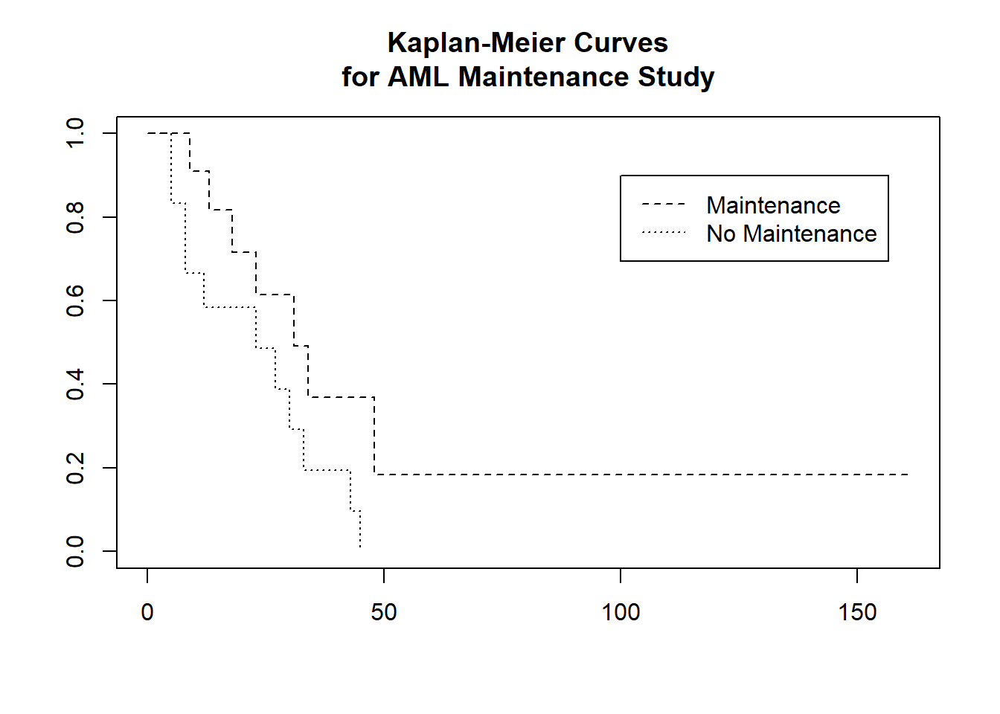
lsurv2<-survfit(Surv(time,status)~x,aml, type='fleming')
plot(lsurv2,lty=2:3,fun="cumhaz",xlab="Months",ylab="Cumulative Hazard")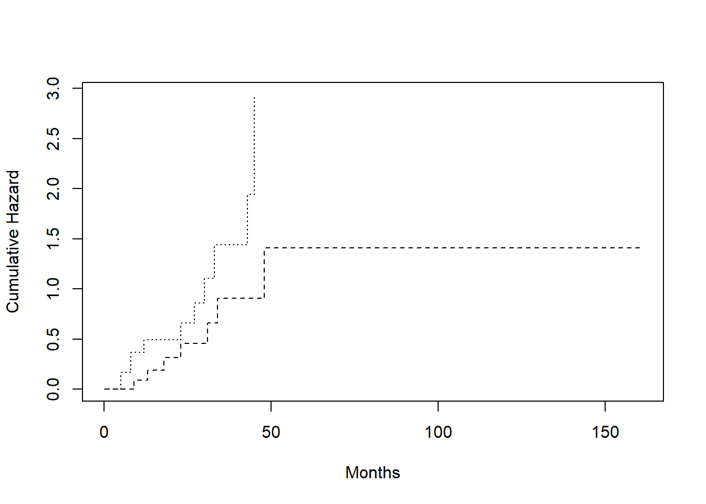
Observando la curva de supervivencia que hemos obtenido , vemos como en los 50 primeros meses de tratamiento de la enfermedad con quimioterapia, la supervivencia de estos pacientes aumentaba progresivamente, hasta mantenerse casi estable a partir de ese tiempo.
3. La función survexp
Devuelve la supervivencia esperada de una cohorte de sujetos, o la supervivencia esperada para cada sujeto de forma individual.
survexp(formula, data, weights, subset, na.action, times, cohort=TRUE,
conditional=FALSE, ratetable=survexp.us, scale=1, npoints,
se.fit, model=FALSE, x=FALSE, y=FALSE)Formula. Fórmula o modelo antes descrito.
Ejemplo
Datos del ejemplo: pbc
El conjunto de datos pbc (Primary Biliary Cirrhosis) proviene de un estudio clínico de la Mayo Clinic sobre una enfermedad hepática autoinmune crónica. Contiene información clínica y de seguimiento sobre pacientes con esta enfermedad.
Incluye 418 observaciones y las siguientes variables principales:
id: identificador del paciente
time: tiempo de seguimiento en días
status: indicador del evento (0 = censurado, 1 = trasplante, 2 = muerte)
trt: grupo de tratamiento (1 = D-penicilamina, 2 = placebo)
age: edad del paciente en años
sex: sexo del paciente ("m"para masculino,"f"para femenino)
ascites: presencia de ascitis (0 = no, 1 = sí)
hepato: presencia de hepatomegalia (0 = no, 1 = sí)
spiders: presencia de arañas vasculares (0 = no, 1 = sí)
edema: grado de edema periférico
bili: nivel de bilirrubina sérica (mg/dL)
chol: nivel de colesterol sérico (mg/dL)
albumin: nivel de albúmina sérica (g/dL)
copper: nivel de cobre sérico (mcg/dL)
alk.phos: fosfatasa alcalina (U/L)
ast: transaminasa glutámico oxalacética (SGOT/AST)
trig: triglicéridos (mg/dL)
platelet: conteo de plaquetas (mil/mm³)
protime: tiempo de protrombina (segundos)
stage: estadio histológico de la enfermedad (1 a 4)
Este conjunto permite modelar la supervivencia de pacientes hepáticos con múltiples variables clínicas y de laboratorio, y comparar dicha supervivencia con la de la población general mediante tablas de vida.
head(pbc) id time status trt age sex ascites hepato spiders edema bili chol
1 1 400 2 1 58.76523 f 1 1 1 1.0 14.5 261
2 2 4500 0 1 56.44627 f 0 1 1 0.0 1.1 302
3 3 1012 2 1 70.07255 m 0 0 0 0.5 1.4 176
4 4 1925 2 1 54.74059 f 0 1 1 0.5 1.8 244
5 5 1504 1 2 38.10541 f 0 1 1 0.0 3.4 279
6 6 2503 2 2 66.25873 f 0 1 0 0.0 0.8 248
albumin copper alk.phos ast trig platelet protime stage
1 2.60 156 1718.0 137.95 172 190 12.2 4
2 4.14 54 7394.8 113.52 88 221 10.6 3
3 3.48 210 516.0 96.10 55 151 12.0 4
4 2.54 64 6121.8 60.63 92 183 10.3 4
5 3.53 143 671.0 113.15 72 136 10.9 3
6 3.98 50 944.0 93.00 63 NA 11.0 3Resultado
# Cargar librería y datos
library(survival)
data(pbc)
# Preparar las variables necesarias
pbc$age_years <- pbc$age # edad ya viene en años
pbc$year <- 1974 # año promedio de inicio del estudio
pbc$sex <- factor(ifelse(pbc$sex == "m", "male", "female")) # convertir a formato requerido
# Estimar supervivencia esperada usando la tabla de vida de EE.UU.
fit_exp <- survexp(Surv(time / 365.25, status == 2) ~ 1,
ratetable = survexp.us,
data = pbc,
times = seq(0, 15, by = 1),
cohort = TRUE) # tiempos en años
# Mostrar resultados
fit_expCall:
survexp(formula = Surv(time/365.25, status == 2) ~ 1, data = pbc,
times = seq(0, 15, by = 1), cohort = TRUE, ratetable = survexp.us)
age ranges from 0.1 to 0.2 years
male: 44 female: 374
date of entry from 1975-05-29 to 1975-05-29
time n.risk survival
0 418 1.000
1 389 1.000
2 366 1.000
3 313 1.000
4 246 1.000
5 198 1.000
6 160 1.000
7 115 1.000
8 81 1.000
9 57 1.000
10 36 1.000
11 25 1.000
12 9 1.000
13 1 0.999
14 0 0.000
15 0 0.000Comparación con curva Kaplan-Meier
# Estimar curva KM observada
fit_km <- survfit(Surv(time / 365.25, status == 2) ~ 1, data = pbc)
# Graficar ambas curvas
plot(fit_km, col = "blue", xlab = "Años", ylab = "Supervivencia", lty = 1,
main = "Supervivencia Observada vs Esperada")
lines(fit_exp$time, fit_exp$surv, col = "red", lty = 2)
legend("topright", legend = c("Kaplan-Meier (observada)", "Esperada (EE.UU.)"),
col = c("blue", "red"), lty = 1:2)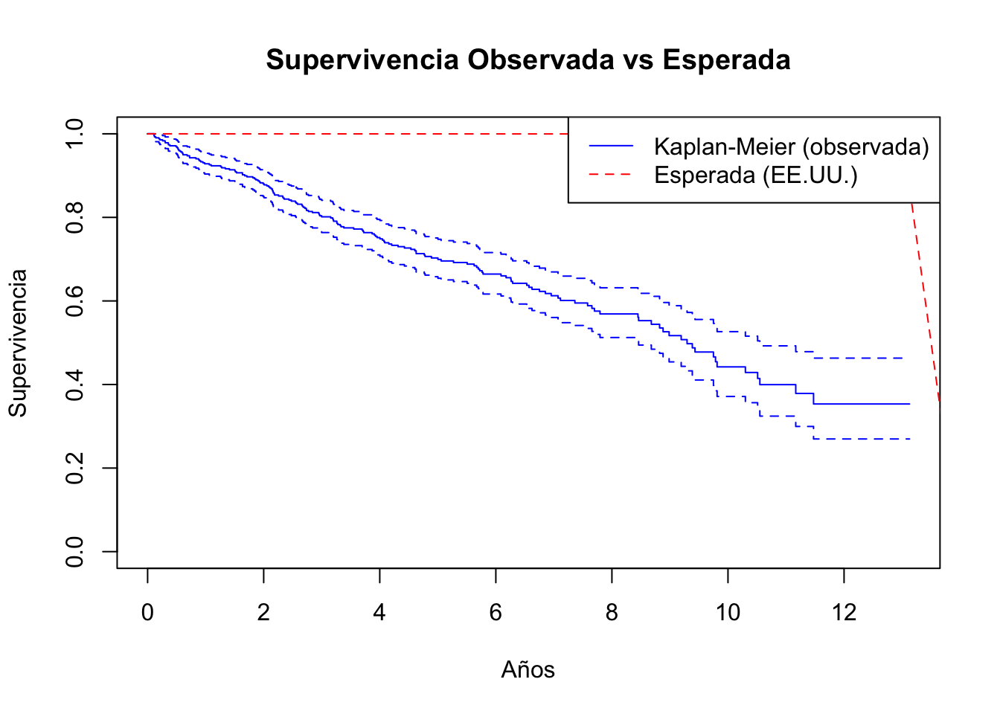
Este análisis compara la supervivencia observada en el estudio pbc con la supervivencia esperada de la población general de EE.UU., emparejada por edad, sexo y año de inicio.
4. La función survdiff()
Permite realizar pruebas de comparación entre curvas de supervivencia de distintos grupos mediante pruebas de rango, como la prueba log-rank o sus extensiones ponderadas (Harrington & Fleming (1982)).
survdiff(formula, data, subset, weights, na.action, rho = 0)formula: fórmula del tipoSurv(tiempo, estado) ~ grupo, donde el grupo define la variable categórica a comparar.
rho: parámetro de ponderación;rho = 0da la prueba log-rank estándar; valores positivos asignan más peso a eventos tardíos.
data: conjunto de datos donde se encuentran las variables.
weights: pesos opcionales para cada observación.
Ejemplo
Datos del ejemplo: lung
El conjunto de datos lung proviene del North Central Cancer Treatment Group y contiene información sobre la supervivencia de pacientes con cáncer de pulmón. El dataset incluye 228 registros con las siguientes variables principales:
time: tiempo de observación (en días)
status: estado del paciente al final del estudio (1 = censurado, 2 = fallecido)
sex: sexo del paciente (1 = hombre, 2 = mujer)
age: edad en años
ph.ecog,ph.karno,pat.karno: medidas del estado funcional
meal.cal,wt.loss: calorías ingeridas y pérdida de peso reciente
head(lung) inst time status age sex ph.ecog ph.karno pat.karno meal.cal wt.loss
1 3 306 2 74 1 1 90 100 1175 NA
2 3 455 2 68 1 0 90 90 1225 15
3 3 1010 1 56 1 0 90 90 NA 15
4 5 210 2 57 1 1 90 60 1150 11
5 1 883 2 60 1 0 100 90 NA 0
6 12 1022 1 74 1 1 50 80 513 0Comparación de supervivencia entre sexos
data(cancer, package = "survival")
# Comparar curvas por sexo con prueba log-rank (rho = 0)
survdiff(Surv(time, status == 2) ~ sex, data = lung)Call:
survdiff(formula = Surv(time, status == 2) ~ sex, data = lung)
N Observed Expected (O-E)^2/E (O-E)^2/V
sex=1 138 112 91.6 4.55 10.3
sex=2 90 53 73.4 5.68 10.3
Chisq= 10.3 on 1 degrees of freedom, p= 0.001 Comparación con ponderación de Fleming-Harrington (rho = 1)
# Prueba log-rank ponderada, con más peso a diferencias en tiempos tardíos
survdiff(Surv(time, status == 2) ~ sex, data = lung, rho = 1)Call:
survdiff(formula = Surv(time, status == 2) ~ sex, data = lung,
rho = 1)
N Observed Expected (O-E)^2/E (O-E)^2/V
sex=1 138 70.4 55.6 3.95 12.7
sex=2 90 28.7 43.5 5.04 12.7
Chisq= 12.7 on 1 degrees of freedom, p= 4e-04 Visualización con curvas Kaplan–Meier
fit_km <- survfit(Surv(time, status == 2) ~ sex, data = lung)
plot(fit_km, col = c("blue", "red"), lty = 1:2,
xlab = "Días", ylab = "Supervivencia",
main = "Supervivencia por sexo")
legend("bottomleft", legend = c("Hombres", "Mujeres"),
col = c("blue", "red"), lty = 1:2)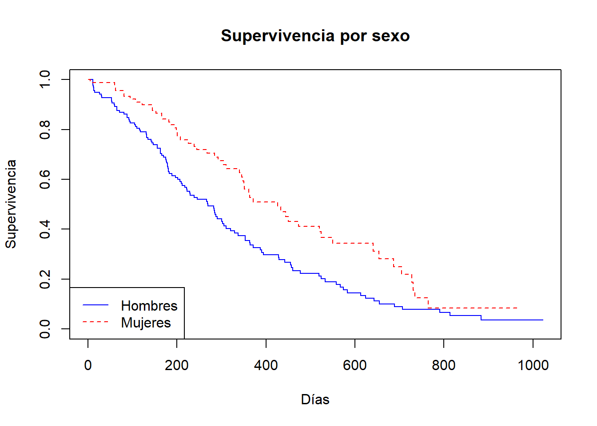
5. La función survreg()
La función survreg() permite ajustar modelos paramétricos de supervivencia. A diferencia del modelo de Cox, que es semiparamétrico, aquí se especifica la distribución del tiempo de supervivencia. Es útil cuando se desea una interpretación explícita del efecto temporal o cuando la función de riesgo se ajusta bien a una distribución conocida (Weibull, exponencial, log-normal, etc.).
survreg(formula, data, subset, weights, na.action, dist = "weibull", scale = 1)formula: especifica la relación entre la variable de supervivencia y las covariables.data: conjunto de datos que contiene las variables.dist: distribución paramétrica a utilizar. Puede ser"weibull","exponential","lognormal","loglogistic","gaussian", entre otras.scale: parámetro de escala (opcional).weights,subset,na.action: argumentos estándar para manejo de subconjuntos, pesos o valores faltantes.
Ejemplo
Datos del ejemplo: lung
El conjunto lung contiene información sobre pacientes con cáncer de pulmón. Las variables relevantes para este modelo incluyen:
time: tiempo hasta el evento (en días)
status: indicador del evento (1 = censurado, 2 = fallecido)
age: edad del paciente
sex: sexo (1 = hombre, 2 = mujer)
# Ajuste de modelo exponencial
fit_exp <- survreg(Surv(time, status == 2) ~ age + sex, data = lung, dist = "exponential")
summary(fit_exp)
Call:
survreg(formula = Surv(time, status == 2) ~ age + sex, data = lung,
dist = "exponential")
Value Std. Error z p
(Intercept) 6.35967 0.63547 10.01 <2e-16
age -0.01562 0.00911 -1.72 0.086
sex 0.48093 0.16709 2.88 0.004
Scale fixed at 1
Exponential distribution
Loglik(model)= -1156.1 Loglik(intercept only)= -1162.3
Chisq= 12.48 on 2 degrees of freedom, p= 0.002
Number of Newton-Raphson Iterations: 4
n= 228 Cambio de distribución
# Ajuste con distribución log-normal
fit_ln <- survreg(Surv(time, status == 2) ~ age + sex, data = lung, dist = "lognormal")
summary(fit_ln)
Call:
survreg(formula = Surv(time, status == 2) ~ age + sex, data = lung,
dist = "lognormal")
Value Std. Error z p
(Intercept) 6.40799 0.59293 10.81 < 2e-16
age -0.02336 0.00839 -2.78 0.00536
sex 0.51925 0.15515 3.35 0.00082
Log(scale) 0.05134 0.05602 0.92 0.35943
Scale= 1.05
Log Normal distribution
Loglik(model)= -1158.8 Loglik(intercept only)= -1169.3
Chisq= 21.04 on 2 degrees of freedom, p= 2.7e-05
Number of Newton-Raphson Iterations: 3
n= 228 Comparación por AIC
AIC(fit_exp, fit_ln) df AIC
fit_exp 3 2318.198
fit_ln 4 2325.500Esto permite determinar cuál modelo se ajusta mejor a los datos.
Interpretación
Los coeficientes estimados en survreg() se interpretan en el marco de una regresión acelerada del tiempo de falla (Accelerated Failure Time Model), es decir, una multiplicación del tiempo esperado de supervivencia por un factor exponencial del predictor.
Para una discusión detallada sobre modelos paramétricos de supervivencia, consulta Klein & Moeschberger (2003) y Therneau & Grambsch (2000).
6. La función coxph()
La función coxph() ajusta el modelo de regresión de Cox (modelo de riesgos proporcionales), ampliamente utilizado en análisis de supervivencia. Para una explicación computacional detallada, véase Moore (2016), capítulo 4. Es un modelo semiparamétrico, ya que no especifica la forma funcional de la línea base de la función de riesgo, pero estima los efectos relativos de las covariables.
coxph(formula, data, weights, subset, na.action, ties = "efron", ...)formula: especifica la relación entreSurv(tiempo, evento)y las covariables.data: marco de datos con las variables.ties: método para manejar empates (opciones comunes:"efron"[por defecto],"breslow","exact").weights,subset,na.action: argumentos estándar para subconjuntos, pesos y manejo de datos faltantes.
Ejemplo
Datos del ejemplo: lung
El dataset lung contiene datos sobre pacientes con cáncer de pulmón. Entre las variables relevantes:
time: tiempo de observación (días)
status: 1 = censurado, 2 = fallecido
age: edad del paciente
sex: 1 = hombre, 2 = mujer
# Ajustar un modelo de Cox
fit_cox <- coxph(Surv(time, status == 2) ~ age + sex, data = lung)
summary(fit_cox)Call:
coxph(formula = Surv(time, status == 2) ~ age + sex, data = lung)
n= 228, number of events= 165
coef exp(coef) se(coef) z Pr(>|z|)
age 0.017045 1.017191 0.009223 1.848 0.06459 .
sex -0.513219 0.598566 0.167458 -3.065 0.00218 **
---
Signif. codes: 0 '***' 0.001 '**' 0.01 '*' 0.05 '.' 0.1 ' ' 1
exp(coef) exp(-coef) lower .95 upper .95
age 1.0172 0.9831 0.9990 1.0357
sex 0.5986 1.6707 0.4311 0.8311
Concordance= 0.603 (se = 0.025 )
Likelihood ratio test= 14.12 on 2 df, p=9e-04
Wald test = 13.47 on 2 df, p=0.001
Score (logrank) test = 13.72 on 2 df, p=0.001Interpretación
En este modelo, los coeficientes estimados representan el logaritmo del hazard ratio. Un hazard ratio mayor que 1 indica mayor riesgo del evento asociado a esa covariable, mientras que uno menor que 1 indica menor riesgo.
exp(coef(fit_cox)) # hazard ratios age sex
1.017191 0.598566 confint(fit_cox) # intervalos de confianza 2.5 % 97.5 %
age -0.001031952 0.03512262
sex -0.841430092 -0.18500694Evaluación de ajuste
# Evaluar bondad de ajuste
cox.zph(fit_cox) # prueba de proporcionalidad chisq df p
age 0.209 1 0.65
sex 2.608 1 0.11
GLOBAL 2.771 2 0.25plot(survfit(fit_cox), xlab = "Días", ylab = "Supervivencia")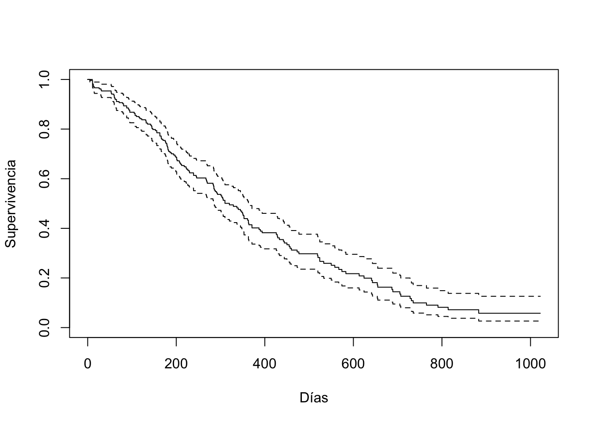
El modelo de regresión de Cox fue introducido por Cox (1972) y es ampliamente tratado en Therneau & Grambsch (2000) y Klein & Moeschberger (2003).
7. La función survfit.coxph()
Una vez ajustado un modelo de Cox con coxph(), es posible estimar curvas de supervivencia ajustadas para valores específicos de las covariables mediante survfit() aplicado al modelo ajustado. Esto permite visualizar la supervivencia predicha para diferentes perfiles de paciente.
survfit(object, newdata, se.fit = TRUE, conf.int = 0.95)object: objeto resultante decoxph().newdata: marco de datos que especifica los valores de las covariables para los cuales se desea predecir la supervivencia.se.fit: si se deben calcular los errores estándar.conf.int: nivel de confianza para los intervalos.
Ejemplo
# Ajustar modelo de Cox
fit_cox <- coxph(Surv(time, status == 2) ~ age + sex, data = lung)
# Estimar curva de supervivencia para un perfil específico
nuevo_paciente <- data.frame(age = 60, sex = 1)
fit_surv <- survfit(fit_cox, newdata = nuevo_paciente)
# Graficar la curva de supervivencia estimada
plot(fit_surv, xlab = "Días", ylab = "Supervivencia estimada",
main = "Curva de supervivencia estimada para paciente masculino de 60 años")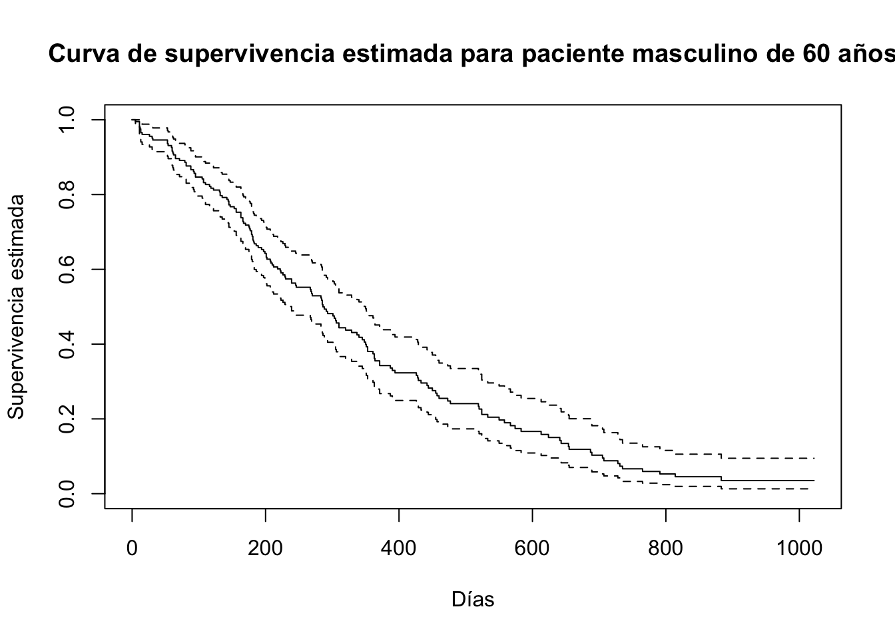
Tabla de supervivencia estimada
# Mostrar una tabla resumen con tiempo y supervivencia estimada
head(data.frame(
Tiempo = fit_surv$time,
Supervivencia = round(fit_surv$surv, 4),
`Límite inferior` = round(fit_surv$lower, 4),
`Límite superior` = round(fit_surv$upper, 4)
), 10) Tiempo Supervivencia Límite.inferior Límite.superior
1 5 0.9951 0.9855 1.0000
2 11 0.9804 0.9614 0.9997
3 12 0.9755 0.9543 0.9971
4 13 0.9656 0.9406 0.9913
5 15 0.9607 0.9339 0.9882
6 26 0.9557 0.9274 0.9849
7 30 0.9508 0.9210 0.9815
8 31 0.9458 0.9146 0.9781
9 53 0.9359 0.9020 0.9710
10 54 0.9309 0.8958 0.9674Comparación entre perfiles
También es posible comparar curvas para distintos perfiles:
nuevo_pacientes <- data.frame(
age = c(60, 60),
sex = c(1, 2) # hombre vs mujer
)
fit_comparado <- survfit(fit_cox, newdata = nuevo_pacientes)
plot(fit_comparado, col = c("blue", "red"), lty = 1:2,
xlab = "Días", ylab = "Supervivencia",
main = "Supervivencia ajustada por sexo a edad 60")
legend("bottomleft", legend = c("Hombre", "Mujer"),
col = c("blue", "red"), lty = 1:2)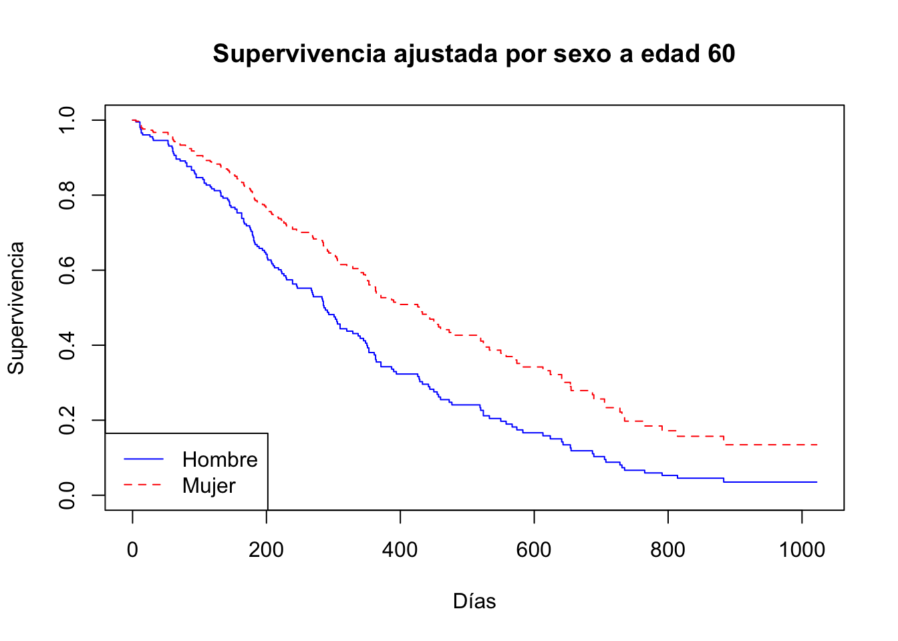
Interpretación
Este tipo de predicción es útil para generar estimaciones personalizadas de supervivencia condicional, y es ampliamente utilizado en aplicaciones clínicas para comunicar pronósticos basados en modelos multivariados.
La interpretación y uso de curvas ajustadas en el modelo de Cox está discutida en Therneau & Grambsch (2000).
8. La función basehaz()
La función basehaz() permite extraer la función de riesgo acumulado base (baseline cumulative hazard) a partir de un modelo de Cox ajustado con coxph(). Esta función es útil para visualizar cómo se acumula el riesgo a lo largo del tiempo en ausencia de covariables.
basehaz(fit, centered = TRUE)fit: modelo ajustado mediantecoxph().centered: si esTRUE(por defecto), el riesgo acumulado se estima para un individuo promedio (valores medios de las covariables). Si se establece enFALSE, el riesgo no se centra y refleja los valores brutos.
Ejemplo
# Ajustar modelo de Cox
fit_cox <- coxph(Surv(time, status == 2) ~ age + sex, data = lung)
# Extraer riesgo acumulado base
haz_base <- basehaz(fit_cox, centered = TRUE)Tabla de riesgo acumulado
# Mostrar primeras filas como tabla
head(data.frame(
Tiempo = haz_base$time,
`Riesgo acumulado` = round(haz_base$hazard, 4)
), 10) Tiempo Riesgo.acumulado
1 5 0.0042
2 11 0.0169
3 12 0.0212
4 13 0.0298
5 15 0.0342
6 26 0.0386
7 30 0.0430
8 31 0.0474
9 53 0.0564
10 54 0.0609Visualización
# Graficar función de riesgo acumulado base
plot(haz_base$time, haz_base$hazard, type = "l",
xlab = "Días", ylab = "Riesgo acumulado",
main = "Función de riesgo acumulado base")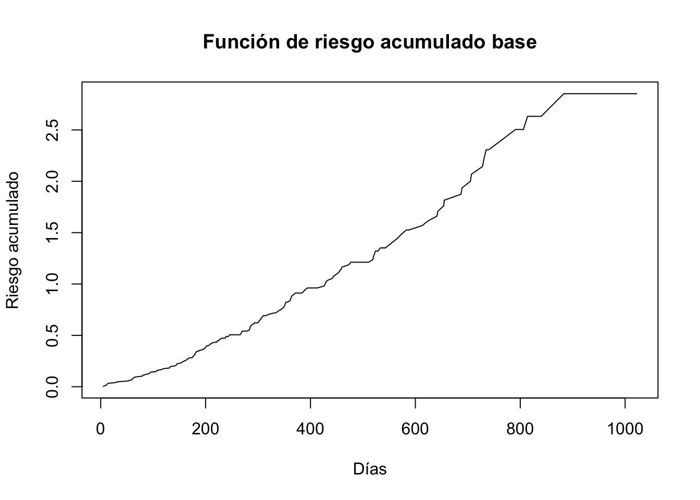
Interpretación
La función de riesgo acumulado es clave en el modelo de Cox, ya que permite reconstruir la función de supervivencia predicha cuando se combina con los efectos de las covariables. Una pendiente más pronunciada en la curva indica mayor ocurrencia de eventos en esa región del tiempo.
Una descripción técnica del cálculo e interpretación de la función de riesgo acumulado puede encontrarse en Therneau & Grambsch (2000).
9. La función residuals.coxph()
La función residuals.coxph() permite obtener diferentes tipos de residuos a partir de un modelo de Cox ajustado con coxph(). Estos residuos son útiles para diagnosticar el ajuste del modelo, detectar observaciones influyentes o evaluar supuestos.
residuals(object, type = c("martingale", "deviance", "schoenfeld", "dfbeta", "score"))object: modelo ajustado mediantecoxph().type: tipo de residuo a calcular:"martingale": para evaluar el ajuste del modelo"deviance": transformación simétrica de los residuos de martingala"schoenfeld": usados para evaluar el supuesto de riesgos proporcionales"dfbeta": influencia de cada observación en los coeficientes"score": residuo de score para cada observación
Ejemplo
# Ajustar modelo de Cox
fit_cox <- coxph(Surv(time, status == 2) ~ age + sex, data = lung)
# Calcular residuos de martingala
res_mart <- residuals(fit_cox, type = "martingale")Tabla de residuos
# Mostrar los primeros residuos de martingala
head(data.frame(
ID = 1:length(res_mart),
`Residuo martingala` = round(res_mart, 4)
), 10) ID Residuo.martingala
1 1 0.0044
2 2 -0.5058
3 3 -3.1298
4 4 0.5328
5 5 -2.3507
6 6 -4.2537
7 7 0.4475
8 8 0.2900
9 9 0.5483
10 10 0.6806Visualización del ajuste
# Residuo martingala vs edad
plot(lung$age, res_mart, xlab = "Edad", ylab = "Residuo de martingala",
main = "Diagnóstico de ajuste (edad vs residuo)")
abline(h = 0, lty = 2, col = "gray")
Interpretación
- Residuos de martingala cercanos a 0 indican buen ajuste.
- Valores extremos (positivos o negativos) pueden indicar mal ajuste o valores atípicos.
- La relación de los residuos con covariables puede revelar no linealidades o necesidad de transformación.
Para una explicación detallada de los residuos diagnósticos en modelos de Cox, consulta Therneau & Grambsch (2000).
10. La función cox.zph()
La función cox.zph() permite evaluar el supuesto de riesgos proporcionales en el modelo de Cox. Este supuesto implica que el efecto de las covariables sobre la razón de riesgos es constante a lo largo del tiempo.
Este diagnóstico se basa en los residuos de Schoenfeld, y puede visualizarse gráficamente junto con una prueba estadística de correlación entre el tiempo y el residuo.
cox.zph(fit, transform = "rank", terms = TRUE, global = TRUE)fit: modelo ajustado concoxph().transform: tipo de transformación del tiempo para el test (por defecto"rank").terms: si se debe aplicar el test individual a cada covariable.global: si se incluye una prueba conjunta para todo el modelo.
Ejemplo
# Ajustar modelo de Cox
fit_cox <- coxph(Surv(time, status == 2) ~ age + sex, data = lung)
# Evaluar el supuesto de riesgos proporcionales
zph_test <- cox.zph(fit_cox)
zph_test chisq df p
age 0.209 1 0.65
sex 2.608 1 0.11
GLOBAL 2.771 2 0.25Visualización
# Gráfico de residuos de Schoenfeld
plot(zph_test, var = "age", resid = TRUE,
xlab = "Tiempo transformado", ylab = "Residuo de Schoenfeld",
main = "Evaluación de proporcionalidad para 'age'")
abline(h = 0, col = "red", lty = 2)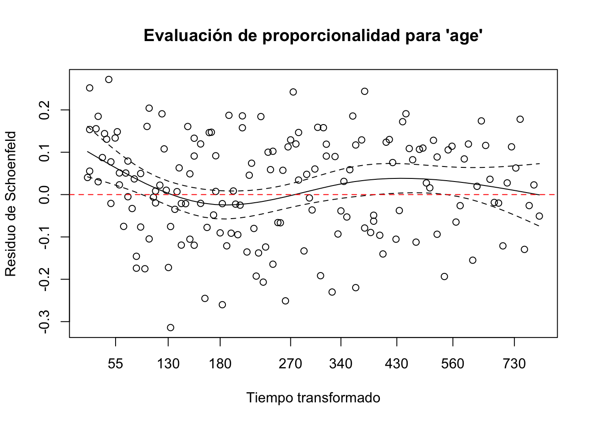
# Otro ejemplo: para 'sex'
plot(zph_test, var = "sex", resid = TRUE,
main = "Evaluación de proporcionalidad para 'sex'")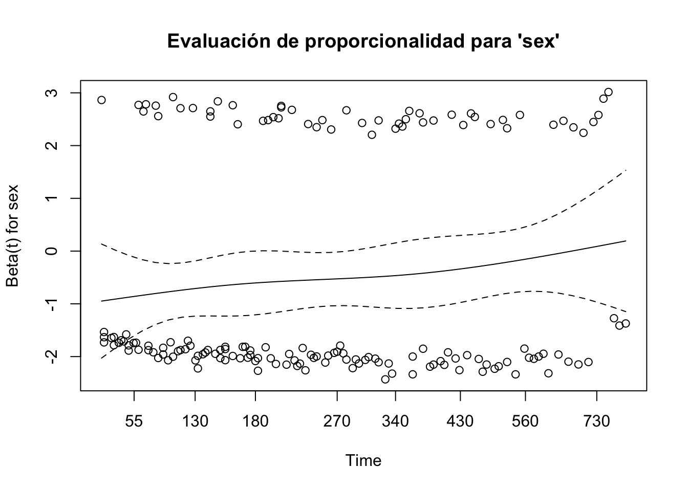
Interpretación
- Si la curva estimada es horizontal y cercana a cero, se cumple el supuesto.
- Si hay una tendencia sistemática en el tiempo, el efecto no es proporcional.
- El valor
pasociado a cada covariable permite formalizar el test:p < 0.05→ evidencia contra el supuesto de proporcionalidad.p > 0.05→ no hay evidencia suficiente para rechazarlo.
El método de evaluación del supuesto de riesgos proporcionales mediante residuos de Schoenfeld se encuentra detallado en Therneau & Grambsch (2000).
11. La función strata()
La función strata() se utiliza dentro de una fórmula de modelo en coxph() para indicar que una o más variables deben tratarse como estratos. Esto permite ajustar un modelo de Cox donde el efecto de ciertas variables no se modela directamente, sino que se permite que la función de riesgo base varíe por estrato.
Esto es especialmente útil cuando una covariable no cumple el supuesto de riesgos proporcionales pero se desea conservar su estructura en el modelo.
coxph(Surv(tiempo, evento) ~ covariables + strata(estrato), data = datos)strata(...): se coloca dentro de la fórmula para indicar que las curvas de riesgo base deben estimarse por separado para cada nivel del estrato.
Ejemplo
# Modelo con estratificación por institución
fit_strat <- coxph(Surv(time, status == 2) ~ age + strata(inst), data = lung)
summary(fit_strat)Call:
coxph(formula = Surv(time, status == 2) ~ age + strata(inst),
data = lung)
n= 227, number of events= 164
(1 observation deleted due to missingness)
coef exp(coef) se(coef) z Pr(>|z|)
age 0.021643 1.021879 0.009844 2.198 0.0279 *
---
Signif. codes: 0 '***' 0.001 '**' 0.01 '*' 0.05 '.' 0.1 ' ' 1
exp(coef) exp(-coef) lower .95 upper .95
age 1.022 0.9786 1.002 1.042
Concordance= 0.574 (se = 0.031 )
Likelihood ratio test= 4.99 on 1 df, p=0.03
Wald test = 4.83 on 1 df, p=0.03
Score (logrank) test = 4.87 on 1 df, p=0.03En este ejemplo, la variable inst representa diferentes instituciones médicas. Al usarla como estrato, se permite que cada institución tenga su propia curva de riesgo base, pero se estima un efecto común de la edad en todos los grupos.
Comparación con modelo sin estratificación
fit_no_strat <- coxph(Surv(time, status == 2) ~ age + inst, data = lung)Este segundo modelo estima un coeficiente para cada nivel de inst, asumiendo proporcionalidad, lo cual puede ser inadecuado si el supuesto no se cumple.
Visualización
plot(survfit(fit_strat), col = 1:3, lty = 1,
xlab = "Días", ylab = "Supervivencia",
main = "Curvas estratificadas por institución")
legend("bottomleft", legend = levels(factor(lung$inst)), col = 1:3, lty = 1)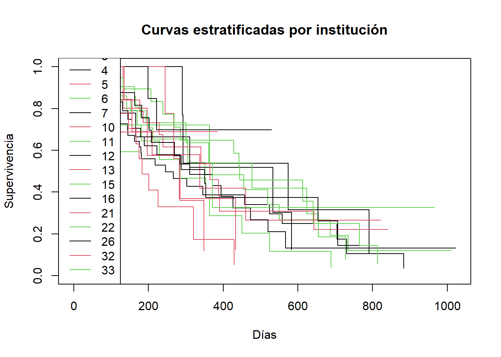
Interpretación
La estratificación permite controlar por una variable que afecta la forma del riesgo base pero no interesa modelar directamente su efecto. Así, se mejora la validez del modelo para otras covariables de interés.
El uso de estratos en modelos de Cox está ampliamente discutido en Therneau & Grambsch (2000) y es una herramienta clave para relajar el supuesto de riesgos proporcionales.
Referencias
Harrington, D. P., & Fleming, T. R. (1982). A class of rank test procedures for censored survival data. Biometrika, 69(3), 553–566. https://doi.org/10.1093/biomet/69.3.553
Klein, J. P., & Moeschberger, M. L. (2003). Survival analysis: Techniques for censored and truncated data (2nd ed.). Springer.
Moore, D. F. (2016). Applied survival analysis using r (2nd ed.). Springer. https://doi.org/10.1007/978-3-319-31245-3
Therneau, T. M., & Grambsch, P. M. (2000). Modeling survival data: Extending the cox model. Springer.